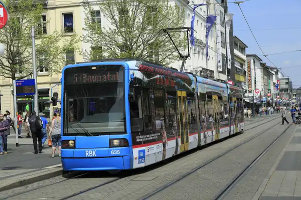
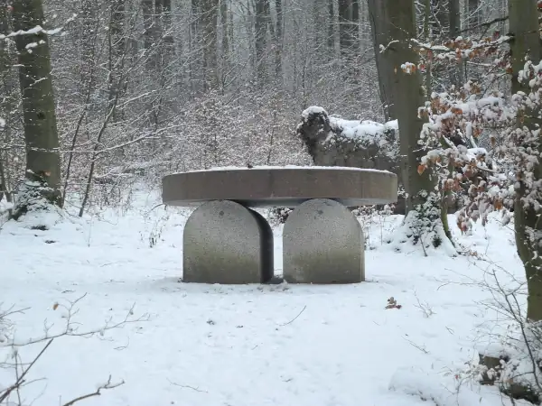

Start / Sehenswürdigkeiten
Aaron Schiele
geprüft am 09.10.2026
geprüft am 09.10.2026
Die Orte auf einen Blick
| Sehenswürdigkeit | Lage | Eintritt Erwachsene | Geöffnet | Mehr dazu |
|---|---|---|---|---|
| Bergpark Wilhelmshöhe | Bad Wilhelmshöhe | frei | ganzjährig | Bergpark |
| Herkules (Oktogon) | oben im Bergpark | 8 Euro, unter 18 frei | April bis Oktober, Di bis So | Herkules |
| Wasserspiele | Bergpark | frei | 1.5. bis 3.10., Mi, So und Feiertag ab 14.30 Uhr | Wasserspiele |
| Löwenburg | Bergpark | 8 Euro inkl. Führung | Di bis So, im Winter Fr bis So | Löwenburg |
| Schloss Wilhelmshöhe | unten im Bergpark | 8 Euro | Di bis So | Schloss |
| Fridericianum | Friedrichsplatz | 6 Euro, mittwochs frei | Di bis So | documenta 2027 |
| Grimmwelt | Weinberg | 10 Euro | Di bis So | Grimmwelt |
| Karlsaue und Orangerie | an der Fulda | Park frei, Planetarium 8 Euro | Park ganzjährig | Orangerie |
| Neue Galerie | Schöne Aussicht | 8 Euro | Di bis So | – |
| Hessisches Landesmuseum | Brüder-Grimm-Platz | 8 Euro | Di bis So | – |
Montags haben fast alle Museen zu – dann ist Zeit für einen langen Spaziergang durch Bergpark oder Karlsaue. Für Schloss, Löwenburg und Herkules gibt es ein gemeinsames Tagesticket Wilhelmshöhe; während der Ausstellung „DÜRER“ kostet es 12 Euro.
Bergpark Wilhelmshöhe: Herkules, Wasserspiele, Löwenburg, Schloss
Der Bergpark ist immer offen und kostet nichts, bezahlt wird nur für die Gebäude. Unten Schloss und Wiesen, oben der Herkules – dazwischen ein langer, grüner Hang voller Wege, Wasserläufe und Ausblicke.
- Herkules: Ganz oben über dem Park. Von hier schaust du den ganzen Hang hinunter bis über die Stadt, an klaren Tagen weit ins Land.
- Wasserspiele: Ab 14.30 Uhr rauscht das Wasser am Herkules los und stürzt Kaskade für Kaskade bergab, ganz ohne Pumpe, bis es an der Großen Fontäne in die Höhe schießt. Am besten läufst du einfach mit.
- Löwenburg: Eine Ritterburg wie aus dem Bilderbuch, mitten im Wald. Hinein geht es nur mit Führung zur vollen Stunde, also Tickets früh holen.
- Schloss Wilhelmshöhe: Drinnen hängen Rembrandt, Rubens und Dürer, draußen liegt dir der ganze Park zu Füßen.
Wer nur einen Tag hat, nimmt oben den Herkules und unten das Schloss mit. Zu Fuß dauert der Weg dazwischen ca. 1,5 Stunden – bergab ist es die schönere Richtung.
Sehenswürdigkeiten in der Kasseler Innenstadt
In der Innenstadt liegt alles nah beieinander, du läufst gemütlich von Ort zu Ort.
- Friedrichsplatz und Fridericianum: Das Fridericianum ist das Herz der documenta. Zwischen 12. Juni und 19. September 2027 ist die nächste Ausgabe zu sehen, dann ist die ganze Stadt voller Kunst.
- Karlsaue und Orangerie: Ein weiter Park an der Fulda mit Alleen, Wasserflächen und viel Platz zum Durchatmen. In der Orangerie wartet ein Planetarium, daneben das Marmorbad, das im Sommerhalbjahr kostenlos offen ist.
- Weinberg mit Grimmwelt: Drinnen die Märchenwelt der Brüder Grimm zum Mitmachen, oben die große Dachterrasse mit Blick über die Südstadt bis zum Herkules.
- Neue Galerie: Kunst bis in die Gegenwart, mit dem Raum von Joseph Beuys als stillem Mittelpunkt.
- Hessisches Landesmuseum: Landesgeschichte zum Stöbern, und zu jeder vollen und halben Stunde geht es hinauf auf den Turm.
Die Wege sind kurz: Vom Fridericianum zum Marmorbad sind es 8 Minuten zu Fuß, von dort zur Neuen Galerie 9 Minuten und weiter zur Grimmwelt 5 Minuten.
documenta-Kunst im Stadtraum
Manche Kunst ist nach der documenta einfach geblieben und steht heute kostenlos mitten in der Stadt. Der „Himmelsstürmer“ von Jonathan Borofsky schreitet vor dem Kulturbahnhof Richtung Himmel. Die „7000 Eichen“ von Joseph Beuys erkennst du an den Basaltstelen neben den Bäumen; der erste und der letzte Baum stehen vor dem Fridericianum. Weitere, stillere Orte findest du unter Kassel abseits der bekannten Wege.
So kommst du zwischen den Orten hin und her
- Bahnhof Wilhelmshöhe → Innenstadt: Linie 1, 3 oder 4 bis Friedrichsplatz.
- Innenstadt → Schloss Wilhelmshöhe: Tram 1 bis zur Endhaltestelle Wilhelmshöhe (Park), von dort zu Fuß in den unteren Bergpark.
- Innenstadt → Herkules: Tram 4 bis Druseltal, dann Bus 22 bis Herkules. Der Bus fährt halbstündlich.
- Zur Grimmwelt: Tram 1, 3 oder 4 bis Rathaus, dann ca. 7 Minuten zu Fuß.
Wie sich das gut auf zwei Tage verteilt, steht unter Kassel am Wochenende.
Häufige Fragen
Was sind die wichtigsten Sehenswürdigkeiten in Kassel?
Ganz vorn steht der Bergpark Wilhelmshöhe mit Herkules, Wasserspielen, Löwenburg und Schloss. In der Innenstadt kommen Fridericianum, Karlsaue mit Orangerie und die Grimmwelt dazu, außerdem Neue Galerie, Museum für Sepulkralkultur, Street Art, documenta-Kunst im Stadtraum, Markthalle und Stadtmuseum.
Welche Sehenswürdigkeiten in Kassel kosten keinen Eintritt?
Der Bergpark, die Wasserspiele, die Karlsaue, das Marmorbad und die documenta-Kunst in der Stadt sind frei. Ins Fridericianum kommst du mittwochs kostenlos, und unter 18 Jahren zahlst du in den Museen von Hessen Kassel Heritage nichts.
Was kann man in der Kasseler Innenstadt ansehen?
Friedrichsplatz mit Fridericianum, die Karlsaue mit Orangerie und Marmorbad, die Neue Galerie, das Hessische Landesmuseum und den Weinberg mit Grimmwelt – alles bequem zu Fuß.
Wie komme ich vom Herkules zum Schloss Wilhelmshöhe?
Zu Fuß bergab durch den Park, in ca. 1,5 Stunden über Wege und Treppen. An Wasserspieltagen folgst du dabei einfach dem Wasser.
Was ist im Winter geöffnet?
Schloss Wilhelmshöhe, die Museen in der Innenstadt und die Grimmwelt haben das ganze Jahr offen, die Löwenburg im Winter freitags bis sonntags. Herkules und Marmorbad machen Winterpause, dafür öffnet im Bergpark das Große Gewächshaus.
Gibt es eine Karte der Sehenswürdigkeiten?
Ja, Visit Kassel hat auf seiner Website eine Kartenansicht mit Sehenswürdigkeiten, Museen und Parks.
Quellen abgerufen am 09.10.2026
- Visit Kassel Top 10 · Sehenswürdigkeiten · Mobilität vor Ort
- Hessen Kassel Heritage Herkules · Löwenburg · Schloss Wilhelmshöhe · Neue Galerie · Hessisches Landesmuseum · Karlsaue · Gewächshaus
- Stadt Kassel Wasserspiele · Anreise mit dem ÖPNV
- Grimmwelt Besucherinformationen
- Fridericianum Besuch
- documenta 16 FAQ
- Wikipedia Herkules (Kassel) · Fridericianum
Weiterlesen

Bergpark Wilhelmshöhe Kassel
Bergpark Wilhelmshöhe in Kassel: was dich im UNESCO-Welterbe erwartet, Eintritt (Park frei), ein Rundweg bergab für einen Tag und die Anreise.
Weiterlesen
Kassel am Wochenende
Kassel am Wochenende: Samstag Innenstadt mit Markthalle, Fridericianum und Grimmwelt, Sonntag Bergpark mit Herkules und Schloss, mit Wegen und Zeiten.
Weiterlesen
Kassel Geheimtipps
Weniger bekannte Orte in Kassel: Künstler-Nekropole, Sepulkralmuseum, Weinbergbunker, Turm des Landesmuseums, Laserscape und Dönche mit Zeiten und Preisen.
Weiterlesen